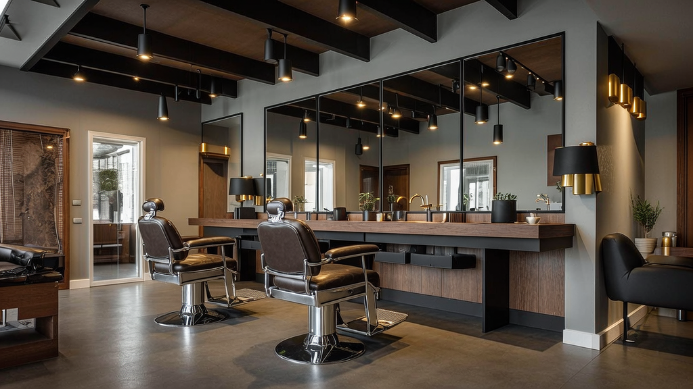
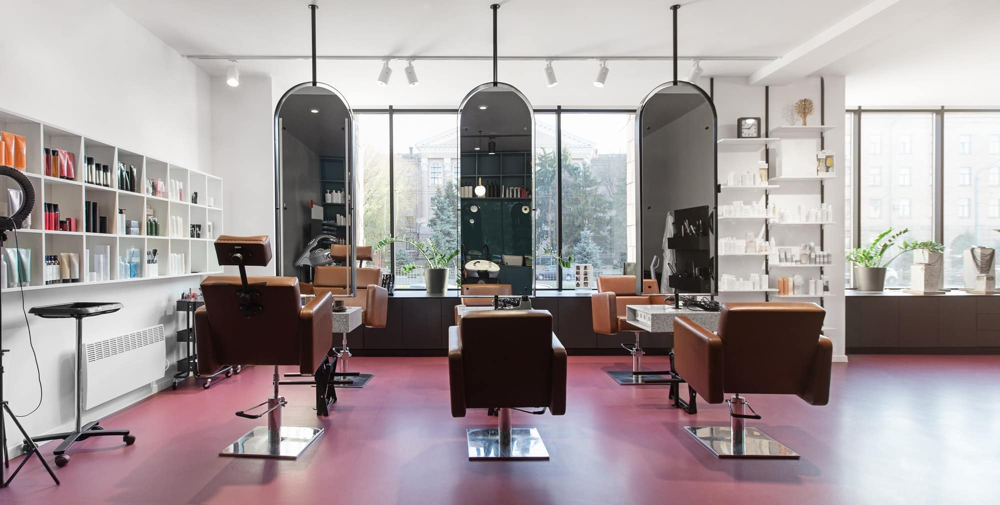
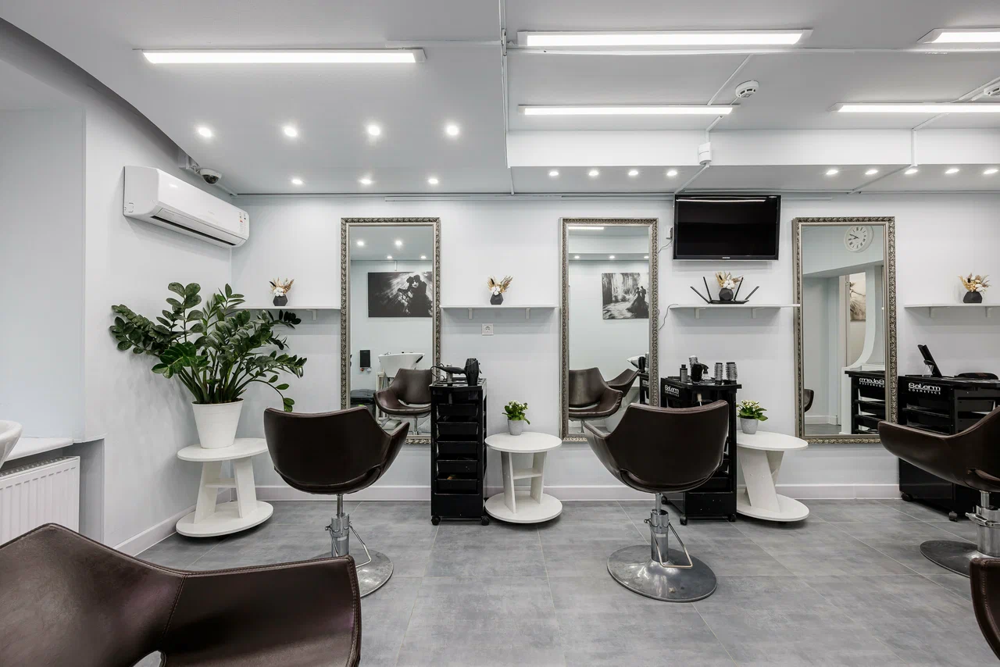

How the 70% model helps technicians thrive
Ask a salon technician what she earns from a $100 service and the honest answer is often $40 to $60. The rest disappears into rent, front desks and marketing she never sees. KuuStore was built the other way around: 70% of every payment goes to the technician, and the platform runs on the remaining 30%.

Why clients should care about a pay split
Fair splits attract experienced people and keep them. A technician who is paid properly can take fewer clients per day, spend the full appointment on yours, and stay in the work for years instead of months. For babysitting families the effect is even plainer: steady, fairly paid sitters are the ones children get attached to, and the ones who stay.

Printed, not promised
The split is on our homepage, our mission page and our calculator, where you can type any price and see exactly what your technician keeps. A promise you can check is worth more than a slogan.
